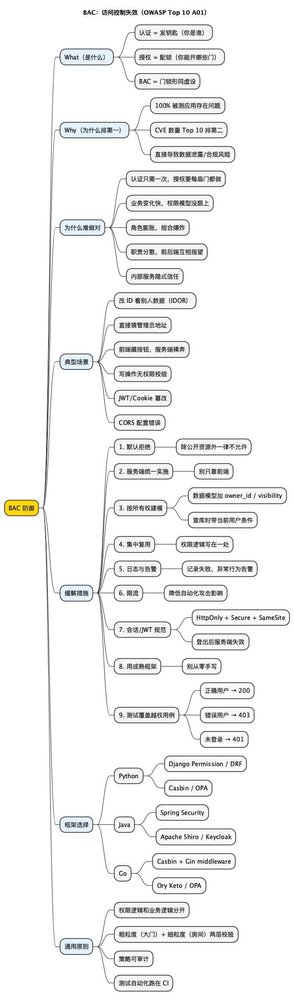

网络安全指北: 为什么 BAC 访问控制失效总能霸榜
Posted on 六 28 2月 2026 in Tech
| Abstract | 为什么 BAC 访问控制失效总能霸榜 |
|---|---|
| Authors | Walter Fan |
| Category | tech note |
| Status | v1.0 |
| Updated | 2026-02-28 |
| License | CC-BY-NC-ND 4.0 |
为什么 BAC 访问控制失效总能霸榜
OWASP Top 10 是全球 Web 安全圈公认的 "风险排行榜"，每隔几年更新一次。SQL 注入来过、XSS 来过，榜单上的面孔换了一拨又一拨——但有一位选手从未跌出过冠军宝座：BAC（Broken Access Control，访问控制失效）。2025 版依然是 A01，第一名。
这就像高考状元年年换人，但 "粗心大意导致丢分" 这个失分原因永远排第一——不是题难，是门没关好。
写了二十多年代码，我越来越觉得：大部分安全问题不是因为算法不够强，而是因为 "门没关好"。认证（Authentication）解决的是 "你是谁"，就好比一把钥匙；访问控制（Authorization）解决的是 "这把钥匙能开哪些门"。BAC 的意思是：钥匙发对了，但门锁形同虚设——该锁的门没锁，或者一把钥匙能开所有房间。
本文就来掰扯一下：BAC 到底是什么、为什么它这么难做对、怎么防，以及 Java/Go/Python 各有哪些现成的工具可以用。
What（BAC 是什么）
访问控制的作用是确保用户只能在被允许的范围内操作。打个比方：你住酒店，房卡只能开你自己那间房，不能开别人的房间，也不能进员工通道——这就是访问控制。一旦这个机制失效，就会出现越权访问、信息泄露或数据被篡改/删除。
BAC 就是说：本该受控的访问没有被正确实施，用户能摸到本不该碰的数据或功能。
小白提示：你可能会看到一些缩写，简单解释一下： - OWASP：一个专门研究 Web 应用安全的国际开源社区，每隔几年发布一份 "Top 10" 最常见安全风险清单。 - CWE：通用弱点枚举（Common Weakness Enumeration），给各种安全缺陷编了号，方便大家统一讨论。 - IDOR：不安全的直接对象引用（Insecure Direct Object Reference），就是 "改一下 URL 里的 ID 就能看到别人的数据"。 - CSRF：跨站请求伪造，攻击者诱导你的浏览器偷偷向目标网站发请求。 - SSRF：服务端请求伪造，攻击者让你的服务器去请求本不该访问的内部资源。
Why（为何是 Top 10 第一）
OWASP 每隔几年会根据全球安全社区提交的真实漏洞数据和 CVE（公开安全漏洞编号）给 Top 10 排序。BAC 一直排第一，无外乎三条：
- 检出率极高：在 2025 版所依据的数据中，100% 的被测应用都存在某种形式的访问控制问题（A01 背景说明）。换句话说，每一个被测试的网站/应用都有这方面的毛病。
- 发生次数与 CVE 数量突出：这类在真实数据里 "出现次数" 最多，相关 CVE 数在 Top 10 里排第二——也就是说，全世界的黑客也特别喜欢找这个洞。
- 直接对应业务与合规风险：一旦被利用，往往是数据被看光、被改掉、被删掉，数据泄露、罚款、品牌受损都跟着来。
所以 BAC 被放在 A01，是真实数据撑出来的，不是拍脑袋排的。
为什么访问控制这么难做对？
想一想，认证只需要做一次（登录），而授权需要在每个接口、每条数据、每种操作上都做对。这就像一栋大楼：门禁系统只要在大门口装一个就行，但每个房间、每个抽屉是否该锁、谁该有钥匙，需要一间一间去配。漏掉一个房间，就是一个 BAC。
再加上几个现实困难：
- 业务变化快：新功能上了，权限模型没跟着更新，或新接口忘了加校验。
- 角色膨胀：系统越做越大，角色从 admin/user 两个变成十几个，组合爆炸后很难覆盖测试。
- 职责分散：前端觉得 "后端会校验"，后端觉得 "网关会拦"，最后谁都没拦。
- 隐式信任：内部服务之间互相调用时，常常默认 "既然能调到，就是有权限"，缺少显式校验。
这也是为什么 OWASP 的第一条建议就是 "默认拒绝"——与其去想 "哪些要锁"，不如默认全部锁死，再逐个放行。
How it causes security issues（如何导致安全问题）
典型 BAC 场景，用生活类比来理解：
| 类型 | 生活类比 | 技术说明 | 后果 |
|---|---|---|---|
| 默认放行 | 大楼所有门都没上锁 | 没按 "默认拒绝" 来，缺省就允许访问 | 任何人都能进任何房间 |
| 参数篡改 / IDOR | 把房卡上的房号从 101 改成 102 | 改 URL 里的 ID 就能查别人数据 | 看到或修改别人的数据 |
| 仅前端校验 | 门口只挂了个 "请勿入内" 的牌子，没装锁 | 权限只在前端 JS 里做，服务端不校验 | 用 curl 直接绕过 |
| 写操作无控 | 任何人都能按电梯里的 "管理员" 按钮 | POST/PUT/DELETE 没做权限校验 | 任意用户可增删改数据 |
| 权限提升 | 普通住客按了按钮就到了总统套房 | 普通用户能访问管理员接口 | 越权 |
| JWT/Cookie 篡改 | 伪造了一张房卡 | 篡改或重放 Token/会话 | 冒充他人 |
| CORS 配置错误 | 允许隔壁酒店的人用你们的房卡系统 | 允许不可信站点调 API | 跨域攻击 |
三个场景帮你秒懂：
- 场景 1（改 ID 看别人数据）：网址是
example.com/account?acct=123，你把 123 改成 456，就看到了别人的账户信息。原因是服务端没有检查 "456 这个账户是不是你的"。 - 场景 2（直接猜管理员地址）：普通用户在浏览器直接输入
example.com/admin，居然能访问管理后台。原因是这个地址没有做登录和角色检查。 - 场景 3（前端藏按钮没用）：管理员按钮在页面上被 JS 隐藏了，但用命令行工具
curl直接请求 API 照样能调通。原因是权限只在前端做了，服务端是 "裸奔" 的。
共同点就一条：访问控制没在可信的服务端/API 里统一、强制落地，要么没做，要么没按 "默认拒绝 + 所有权/角色校验" 来做。
我自己的个人 wiki 就踩过这类坑。数据分三类：公开（所有人可看）、私有（仅自己存取）、共享（对某群组开放）。当时的问题是：
- 数据模型里没有一个清晰的
visibility或owner_id + acl字段组合，"谁可以访问哪条记录" 全靠业务代码里零散的 if-else 来判断。 - 接口边界不清楚——有些 API 既返回公开数据也返回私有数据，靠前端来过滤显示，服务端不做区分。
- 共享给群组的逻辑更复杂，后来发现有些用户退出了群组，仍能访问之前共享的数据。
结果就是典型的 BAC：边界模糊，校验靠感觉。后来不得不回头补建模——给每条记录加 visibility 枚举和 owner_id，共享记录走 ACL 表，接口层统一用 middleware 校验。这件事教训很深：访问控制不是 "功能做完了再加" 的东西，它得从数据模型开始就想清楚。
How to mitigate（如何缓解）
访问控制得在服务端（或 serverless API）统一做——就像锁必须装在门上而不是贴个纸条在门口，攻击者撕不掉真锁，但撕纸条很容易。OWASP 的 How to prevent 要点如下：
- 默认拒绝：除了你明确标记为 "公开" 的资源，其他一律不允许访问。就像酒店的门默认都是锁着的，只有刷房卡才能开。
- 集中、复用：访问控制逻辑写在一个地方，整个应用（包括所有 API）统一使用，别到处复制粘贴。
- 按所有权建模：按 "这条数据是谁的" 来控制访问，用户只能动自己名下的记录，不能 "想查谁就查谁"。
- 业务限制交给领域模型：业务上的访问边界由专门的权限模块统一管理，别散落在各个接口里。
- 关闭目录列表、避免敏感元数据暴露：禁用 Web 根目录列表，确保
.git、备份等不在 Web 根下。 - 记录并告警：记录访问控制失败，对重复失败等异常行为告警。
- 限流：对 API/控制器做速率限制，降低自动化攻击影响。
- 会话与 Token：服务端在登出后使会话失效；若用无状态 JWT，尽量短生命周期，长生命周期时用 refresh token 并遵循 OAuth 撤销机制。
- 用成熟框架/模式：用现成的、声明式的访问控制库或模式，少手写，少漏。
开发和 QA 在单测、集成测里都要覆盖访问控制（比如用别人 ID 请求要 403，未登录要 401）。
Example（Java / Go / Python 正反示例）
BAC 的核心问题跨语言一致：拿到请求里的资源 ID 后，有没有校验 "当前用户有权访问这个 ID 吗"。下面分三种语言各给一组正反例。
小白提示：即使你不熟悉以下某种语言，只需关注反例和正例的区别——反例里直接用请求传来的 ID 查数据库，正例里多了一步 "这个 ID 对应的数据是不是当前用户的"。
Python（Django）
反例：直接用请求参数查库，不校验归属
def get_account(request):
acct_id = request.GET.get("acct") # 攻击者可改为任意 ID
account = Account.objects.get(id=acct_id)
return JsonResponse(account.to_dict())
正例：用当前用户 ID 过滤，不信任客户端传来的 ID
from django.contrib.auth.decorators import login_required
@login_required
def get_account(request):
account = Account.objects.get(user_id=request.user.id)
return JsonResponse(account.to_dict())
@login_required
def get_order(request, order_id):
order = Order.objects.filter(id=order_id, user_id=request.user.id).first()
if not order:
return JsonResponse({"error": "Forbidden"}, status=403)
return JsonResponse(order.to_dict())
Java（Spring Boot）
反例：Controller 里直接用路径参数查库
@GetMapping("/accounts/{id}")
public Account getAccount(@PathVariable Long id) {
return accountRepository.findById(id).orElseThrow();
}
正例：用 @PreAuthorize + 当前用户校验所有权
@GetMapping("/accounts/{id}")
@PreAuthorize("isAuthenticated()")
public Account getAccount(@PathVariable Long id, Authentication auth) {
Account account = accountRepository.findById(id).orElseThrow();
if (!account.getUserId().equals(auth.getName())) {
throw new AccessDeniedException("Forbidden");
}
return account;
}
Spring Security 提供了 @PreAuthorize、@Secured、方法级别的 SpEL 表达式（如 #id == principal.id），可以做到声明式校验，比手写 if-else 少漏很多。
Go（Gin / 标准库）
反例：从 URL 取 ID 直接查库
func GetAccount(c *gin.Context) {
id := c.Param("id")
account, _ := db.FindAccountByID(id)
c.JSON(200, account)
}
正例：从 context 取当前用户，查库时带上 user_id 条件
func GetAccount(c *gin.Context) {
userID := c.GetString("userID") // 由认证 middleware 写入
id := c.Param("id")
account, err := db.FindAccountByIDAndUser(id, userID)
if err != nil {
c.JSON(http.StatusForbidden, gin.H{"error": "Forbidden"})
return
}
c.JSON(200, account)
}
Go 生态里常用 middleware 链来做认证和基础权限校验（如 casbin 做 RBAC/ABAC），资源级所有权校验通常在 handler 内完成。
框架与最佳实践（Java / Go / Python）
不要从零手写访问控制——就像你不会自己造锁，而是买一把经过认证的锁。用成熟的库和模式可以大幅降低遗漏风险。下面按语言梳理常用方案。
小白提示：下面的表格不需要全部记住，只需要知道——你用的语言/框架大概率已经有现成的权限管理工具，用它而不是自己从头写。
Python
| 框架/库 | 说明 |
|---|---|
| Django 权限系统 | 内置 User/Group/Permission 模型，配合 @login_required、@permission_required 做视图级控制；Django REST Framework 的 permissions 模块支持对象级权限（如 IsOwnerOrReadOnly） |
| Flask-Principal / Flask-Login | Flask-Login 管认证，Flask-Principal 管角色/权限 Identity，通过 Permission + RoleNeed 做声明式校验 |
| Casbin (PyCasbin) | 支持 RBAC/ABAC/ACL 多种模型，策略配置和代码分离，适合需要灵活权限模型的场景 |
| OPA (Open Policy Agent) | 策略用 Rego 语言写，通过 sidecar 或 SDK 集成，适合微服务/K8s 环境做统一策略决策 |
最佳实践：Django/DRF 项目优先用框架自带的 permission classes；资源级所有权在 get_queryset() 里用当前用户过滤，而不是在序列化后做。
Java
| 框架/库 | 说明 |
|---|---|
| Spring Security | Java 生态事实标准；@PreAuthorize、@PostAuthorize 做方法级控制，SpEL 表达式可引用方法参数和返回值；FilterChain 做 URL 级控制；配合 Spring ACL 可做对象级权限 |
| Apache Shiro | 比 Spring Security 轻量，API 直观（subject.isPermitted("order:read:123")），适合非 Spring 项目 |
| Keycloak Adapter | 配合 Keycloak 做 SSO/RBAC，Policy Enforcement Point 在网关或应用层，策略在 Keycloak 管理台集中维护 |
| OPA / Casbin-Java | 同上，跨语言统一策略 |
最佳实践：Spring Boot 项目用 Security 的 @PreAuthorize + 自定义 PermissionEvaluator 做对象级校验；不要把权限硬编码在 Controller 的 if-else 里，否则改一次角色要改一堆文件。
Go
| 框架/库 | 说明 |
|---|---|
| Casbin | Go 原生实现，RBAC/ABAC/ACL，策略文件热加载，和 Gin/Echo/gRPC 都有现成 middleware |
| Gin middleware 链 | 认证 middleware 从 JWT/Cookie 提取用户信息写入 context；权限 middleware 在 handler 前校验角色/scope |
| Ory (Keto / Oathkeeper) | Keto 是 Google Zanzibar 的开源实现，做关系型授权（ReBAC）；Oathkeeper 是 API 网关层的访问代理 |
| OPA | 通过 HTTP API 或 Go SDK 嵌入，适合策略与代码分离的架构 |
最佳实践：Go 项目常在 middleware 里做 "角色/scope 级" 粗粒度校验，在 handler 里做 "资源所有权" 细粒度校验；两层都不能省。用 Casbin 或 OPA 时，策略文件和代码分开维护，改权限不用改代码重部署。
跨语言通用原则
不管用什么语言和框架，有几条原则是通的：
- 权限逻辑和业务逻辑分开：别把
if user.role == "admin"塞满业务代码。就像你不会在每个房间门口贴一张纸条写 "只有张三能进"，而是用统一的门禁系统。 - 两层校验：大门口先查你有没有资格进大楼（粗粒度：角色、是否登录），到具体房间再查你有没有这间房的钥匙（细粒度：资源所有权）。两层都不能省。
- 策略可审计：得能在一个地方看到 "谁对什么资源有什么权限"，而不是散落在几十个文件里。
- 测试要覆盖：针对每个接口写三种测试——正确用户访问 → 200，错误用户访问 → 403，未登录 → 401。跑在 CI 里，每次提交代码都自动检查。
Checklist（BAC 自检清单）
- [ ] 除公开资源外，是否默认拒绝访问？
- [ ] 访问控制是否在服务端/API 统一实现，且不依赖前端隐藏或前端校验？
- [ ] 对讲究 "归属" 的资源，有没有用当前用户/会话和资源所有者比对，而不是光拿请求里的 ID 去查？
- [ ] POST/PUT/DELETE 等写操作是否都有授权与所有权校验？
- [ ] 是否关闭 Web 根目录列表，且敏感文件/备份不在 Web 根下？
- [ ] 是否记录访问控制失败并在适当时机告警？
- [ ] 是否对 API/敏感端点做限流？
- [ ] 登出后会话是否在服务端失效？JWT 是否短寿或配合 refresh/撤销机制？
- [ ] 单测/集成测里有没有越权用例（例如用别人 ID 请求要 403）？
Summary
- BAC = 访问控制没做对，导致越权访问；OWASP Top 10:2025 排第一，100% 被测应用存在此类问题。
- 为什么难做对：认证只需一次，授权要在每个接口、每条数据上做对。业务变化快、角色膨胀、职责分散、隐式信任，都是坑。
- 根因：访问控制只在前端、未在服务端统一实施；未默认拒绝；未按所有权/角色校验；或暴露了本不该暴露的接口。
- 缓解：服务端默认拒绝、集中实施、按所有权建模、日志与限流、会话/JWT 规范、用成熟框架、测试覆盖越权用例。
- 框架选择：Python 用 Django Permission / DRF / Casbin；Java 用 Spring Security / Shiro；Go 用 Casbin / middleware 链 / OPA。跨语言通用：权限逻辑和业务逻辑分开，粗细两层校验，策略可审计。
- 开发习惯：凡是 "按 ID 查资源" 的接口，先问一句：当前请求者有没有权访问这个 ID？ 别把客户端传过来的资源 ID 当成授权。
一句话：认证是发钥匙，授权是配锁——每扇门都得单独配，漏一扇就是 BAC。
References
- OWASP Top 10:2025 – A01 Broken Access Control
- OWASP Proactive Controls: C1 Implement Access Control
- OWASP ASVS: V8 Authorization
- OWASP Testing Guide: Authorization Testing
- OWASP Cheat Sheet: Authorization
- Spring Security Reference
- Casbin - Authorization library
- Open Policy Agent (OPA)
- Ory Keto - Zanzibar-based authorization
思维导图
@startmindmap
<style>
mindmapDiagram {
node { BackgroundColor #FAFAFA }
:depth(0) { BackgroundColor #FFD700 }
:depth(1) { BackgroundColor #E3F2FD }
:depth(2) { BackgroundColor #F5F5F5 }
}
</style>
title BAC：访问控制失效（OWASP Top 10 A01）
* BAC 防御
** What（是什么）
*** 认证 = 发钥匙（你是谁）
*** 授权 = 配锁（你能开哪些门）
*** BAC = 门锁形同虚设
** Why（为什么排第一）
*** 100% 被测应用存在问题
*** CVE 数量 Top 10 排第二
*** 直接导致数据泄露/合规风险
** 为什么难做对
*** 认证只需一次，授权要每扇门都做
*** 业务变化快，权限模型没跟上
*** 角色膨胀，组合爆炸
*** 职责分散，前后端互相指望
*** 内部服务隐式信任
** 典型场景
*** 改 ID 看别人数据（IDOR）
*** 直接猜管理员地址
*** 前端藏按钮，服务端裸奔
*** 写操作无权限校验
*** JWT/Cookie 篡改
*** CORS 配置错误
** 缓解措施
*** 1. 默认拒绝
**** 除公开资源外一律不允许
*** 2. 服务端统一实施
**** 别只靠前端
*** 3. 按所有权建模
**** 数据模型加 owner_id / visibility
**** 查库时带当前用户条件
*** 4. 集中复用
**** 权限逻辑写在一处
*** 5. 日志与告警
**** 记录失败，异常行为告警
*** 6. 限流
**** 降低自动化攻击影响
*** 7. 会话/JWT 规范
**** HttpOnly + Secure + SameSite
**** 登出后服务端失效
*** 8. 用成熟框架
**** 别从零手写
*** 9. 测试覆盖越权用例
**** 正确用户 → 200
**** 错误用户 → 403
**** 未登录 → 401
** 框架选择
*** Python
**** Django Permission / DRF
**** Casbin / OPA
*** Java
**** Spring Security
**** Apache Shiro / Keycloak
*** Go
**** Casbin + Gin middleware
**** Ory Keto / OPA
** 通用原则
*** 权限逻辑和业务逻辑分开
*** 粗粒度（大门）+ 细粒度（房间）两层校验
*** 策略可审计
*** 测试自动化跑在 CI
@endmindmap

本作品采用知识共享署名-非商业性使用-禁止演绎 4.0 国际许可协议进行许可。